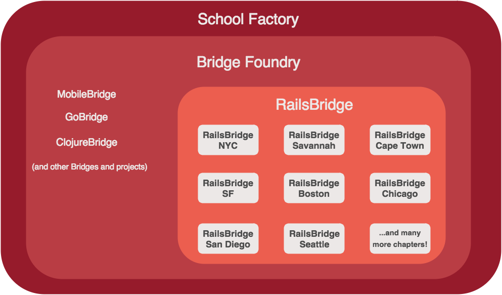

The RailsBridge Team
The team of people that make RailsBridge successful is too large to include here. Each RailsBridge chapter is run by a team of dedicated volunteers, and the RailsBridge board exists primarily to assist those chapter leaders in running workshops and creating communities. All members of the RailsBridge board serve on committees that support cross-chapter concerns, like finance, chapter outreach, fundraising, and communications. The board relies on the input of the RailsBridge Advisory Board when making decisions. To learn more about how the board works, check out the RailsBridge Board Charter.
The RailsBridge Board
The RailsBridge Advisory Board
- Travis Grathwell (Bridge Troll / Docs lead)
- Anna Neyzberg (SF chapter lead)
- Sarah Allen (Bridge Foundry director)
- Rachel Ober (NYC chapter lead)
- Sameer Siruguri (Oakland chapter lead)
- Kevin Lawver (Savannah chapter lead)
- Steve Barnett (Cape Town chapter lead)
- Renée De Voursney (Seattle chapter lead)
- Lauren Scott (Chicago chapter lead)
- Melissa Xie (Boston chapter lead + RailsBridge finance team)
RailsBridge Contributors, Emeriti
Lots of people have helped make RailsBridge great over the years! (This list is far from exhaustive, though.)
And major thanks to everyone who has contributed to the RailsBridge curricula and Bridge Troll!
Are we missing someone? Is someone miscategorized? Let us know! You can either make a pull request (if you know how) or create an issue (no technical knowledge required).
What is RailsBridge, legally?
RailsBridge is not a standalone legal entity; rather, we are a project of Bridge Foundry, an organization empowering people with technology through teaching and facilitating access. Bridge Foundry, in turn, is a project of School Factory, a 501(c)3.
This is a little complex, so we made you a chart:
